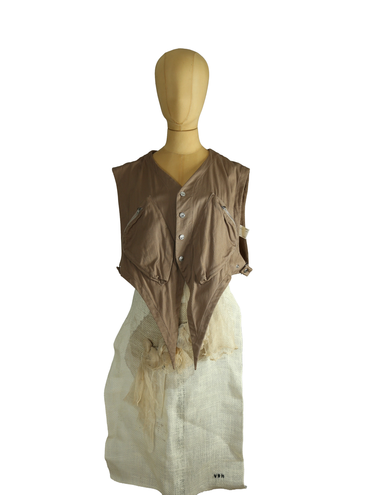

1 / 20Aus dem kuratierten Archiv von Disorder119. Architektonisch geschnittene Weste aus der Spring/Summer 2022 Kollektion von Kiko Kostadinov. Das Design zeichnet sich durch eine klare, funktionale Formsprache aus, kombiniert mit asymmetrischen Linien, spitz zulaufenden Abschlüssen und einer bewusst konstruierten Silhouette. Der fein gerippte Stoff verleiht dem Stück eine technische Oberfläche und unterstreicht den konzeptuellen Ansatz der Kollektion. Funktionale Elemente wie integrierte Reißverschlusstaschen und die skulpturale Front- und Rückenpartie machen die Weste zu einem eigenständigen Statement-Piece, das sowohl solo als auch im Layering getragen werden kann. Details: Marke Kiko Kostadinov Farbe Braun Größe 46 Passform Regular, konzeptueller Schnitt Verschluss Knopfleiste Material Kunstfaser-Mix, gerippte Struktur Herstellungsland Bulgarien Fotografie & Passform: Das Kleidungsstück wurde auf unserer Standard-Schneiderpuppe fotografiert, die wir zur konsistenten Darstellung aller Kleidungsstücke verwenden. Maße der Schneiderpuppe: Brustumfang 89 cm Taillenumfang 66 cm Hüftumfang 89 cm Schulterbreite 38 cm Zustand: Sehr guter Zustand mit leichten, altersbedingten Tragespuren. Rechtliche Hinweise: Verkauf als gebrauchtes Kleidungsstück. Die Beschreibung erfolgt nach bestem Wissen und Gewissen. Farbnuancen und Oberflächenwirkungen können aufgrund von Lichtverhältnissen bei der Fotografie sowie unterschiedlicher Bildschirmdarstellungen leicht vom Original abweichen. Disorder119 steht für sorgfältig kuratierte Designerstücke mit Fokus auf Authentizität, Qualität und zeitlose Relevanz.
Shop-Kontakt noch nicht eingerichtet: WhatsApp-Nummer oder E-Mail-Adresse fehlen in SHOP_CONFIG (index.html).
Disorder119 · Kuratiertes Archiv für Designer-, Vintage- und Contemporary-Mode. Jedes Stück wird einzeln ausgewählt, fotografiert und beschrieben.